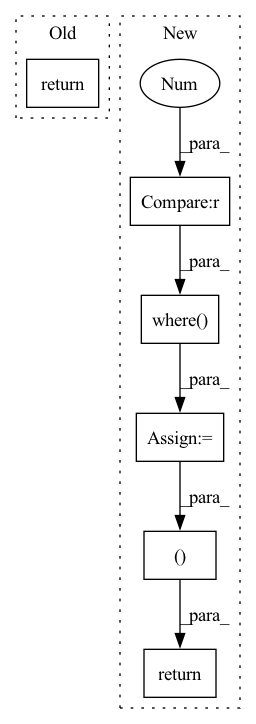

Pattern ID :23387

Before Change
parsed_face = torch.sum(parsed_face, dim=1, keepdim=True)
return parsed_face
def forward(self, x):
H, W = x.size()[2:]
After Change
parsed_face = encode_segmentation_rgb_batch(parsed_face)
parsed_face = torch.where(torch.sum(parsed_face, dim=[1, 2, 3], keepdim=True) > 5000, parsed_face,
torch.zeros_like(parsed_face))
ignore_mask_ids = torch.sum(parsed_face, dim=[1, 2, 3]) == 0
parsed_face = parsed_face.float().mul_(1 / 255.0)
parsed_face = F.interpolate(parsed_face, size=(crop_size, crop_size),
mode="bilinear")
parsed_face = torch.sum(parsed_face, dim=1, keepdim=True)
return parsed_face, ignore_mask_ids
def forward(self, x):
H, W = x.size()[2:]
feat_res8, feat_cp8, feat_cp16 = self.cp(x) // here return res3b1 feature
In pattern: SUPERPATTERN
Frequency: 3
Non-data size: 6
Instances
Fragment ID: 73528665
Project Name: mike9251/simswap-inference-pytorch
Commit Name: 873c64711778578824a6c72ead2a283938fd9240
Time: 2022-07-12
Author: soapbox92@gmail.com
File Name: src/PostProcess/ParsingModel/model.py
M Class Name: BiSeNet
N Class Name: BiSeNet
M Method Name: get_mask(3)
N Method Name: get_mask(3)
M Parent Class: nn.Module
N Parent Class: nn.Module
M File Name: src/PostProcess/ParsingModel/model.py
N File Name: src/PostProcess/ParsingModel/model.py
M Start Line: 250
M End Line: 263
N Start Line: 251
N End Line: 265
'>
Before Change
// add up to 1.
attention_weights = tf.nn.softmax(scaled_attention_logits, axis=-1) // (..., seq_len_q, seq_len_k)
output = tf.matmul(attention_weights, v) // (..., seq_len_q, depth_v)
return output
class MultiHeadAttention(tf.keras.layers.Layer):
After Change
scores = tf.matmul(query, tf.transpose(key, perm=[0, 1, 3, 2])) / math.sqrt(query.shape[-1])
if mask is not None:
scores = tf.where(mask == 0, -1e9, scores)
p_attn = tf.nn.softmax(scores, axis=-1)
return tf.matmul(p_attn, value), p_attn
class PositionwiseFeedForward(layers.Layer, NestedObject):
Position-wise Feed-Forward Network
'>
Fragment ID: 73528667
Project Name: mindee/doctr
Commit Name: 9530f81d15395006b4844299236bdadba11c1dde
Time: 2022-07-01
Author: felixdittrich92@gmail.com
File Name: doctr/models/recognition/transformer/tensorflow.py
M Class Name: AnonimousClass
N Class Name: AnonimousClass
M Method Name: scaled_dot_product_attention(4)
N Method Name: scaled_dot_product_attention(4)
M Parent Class:
N Parent Class:
M File Name: doctr/models/recognition/transformer/tensorflow.py
N File Name: doctr/models/recognition/transformer/tensorflow.py
M Start Line: 88
M End Line: 99
N Start Line: 63
N End Line: 67
'>
Before Change
def backward(self, ctx, dy):
x, = ctx.saved_tensors
zeros = torch.zeros_like(x)
return torch.where(x > 0, dy * x * 2, zeros)
triton_relu_squared = _relu_squared.apply
After Change
x, w, c, mask = ctx.saved_tensors
zeros = torch.zeros_like(dy)
dy = torch.where(c > 0, dy * c * 2, zeros)
db = torch.where(c > 0, dy, zeros)
dx = dy @ w.t()
dw = x.transpose(-1, -2) @ dy
return dx, dw, db
triton_relu_squared = _relu_squared.apply
def fused_relu_squared(x, w, b, use_triton = False):
'>
Fragment ID: 73528666
Project Name: lucidrains/triton-transformer
Commit Name: 72efae6cb8b3c62b501dd5bcf1ab8cfbf684e0cb
Time: 2021-09-21
Author: lucidrains@gmail.com
File Name: triton_transformer/triton_transformer.py
M Class Name: _relu_squared
N Class Name: _relu_squared
M Method Name: backward(3)
N Method Name: backward(3)
M Parent Class: autograd.Function
N Parent Class: autograd.Function
M File Name: triton_transformer/triton_transformer.py
N File Name: triton_transformer/triton_transformer.py
M Start Line: 94
M End Line: 96
N Start Line: 97
N End Line: 103